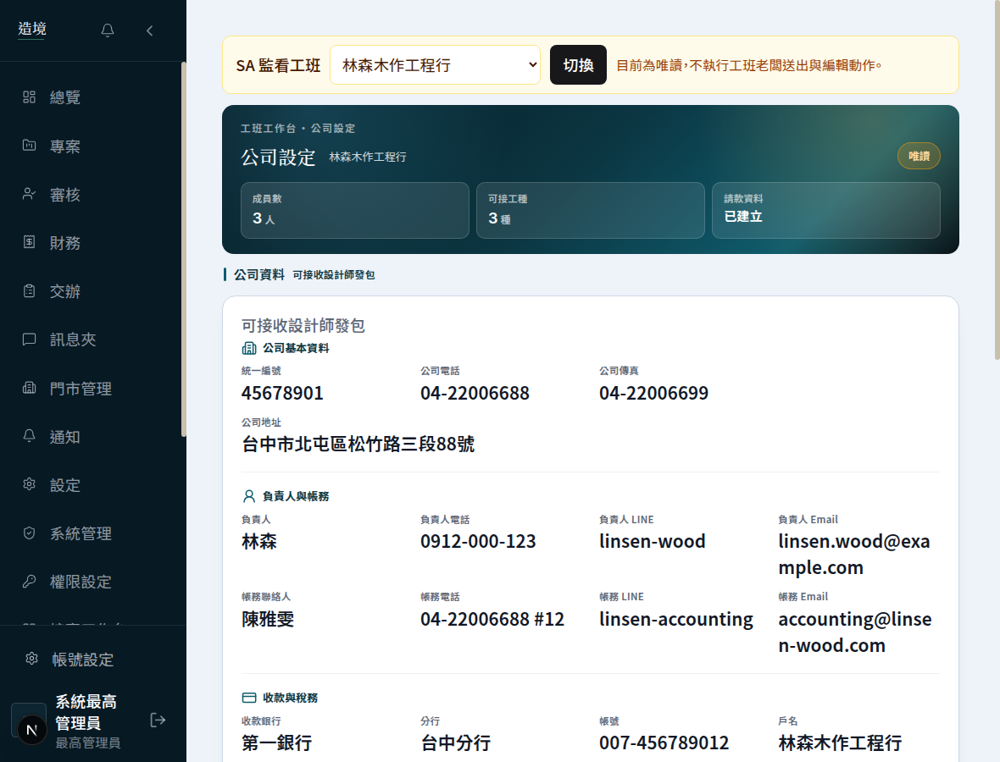
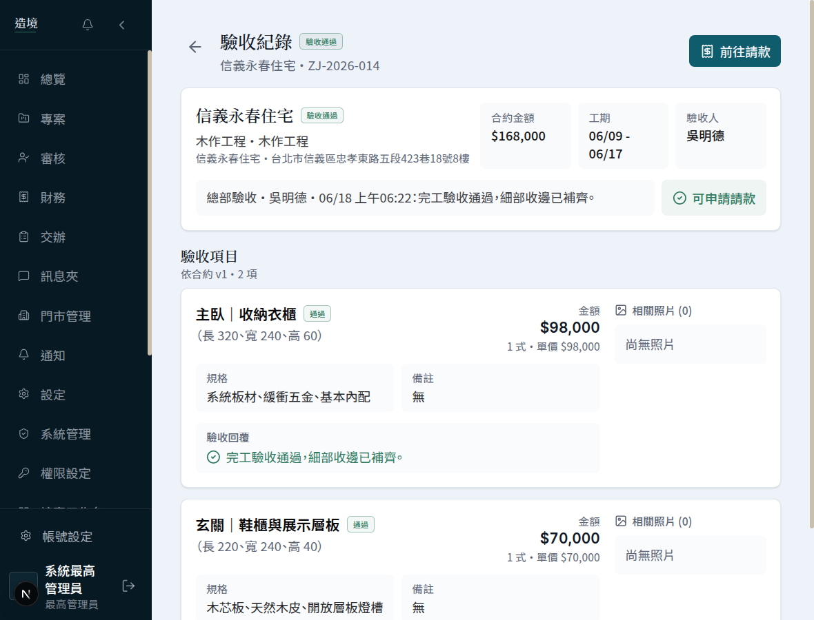
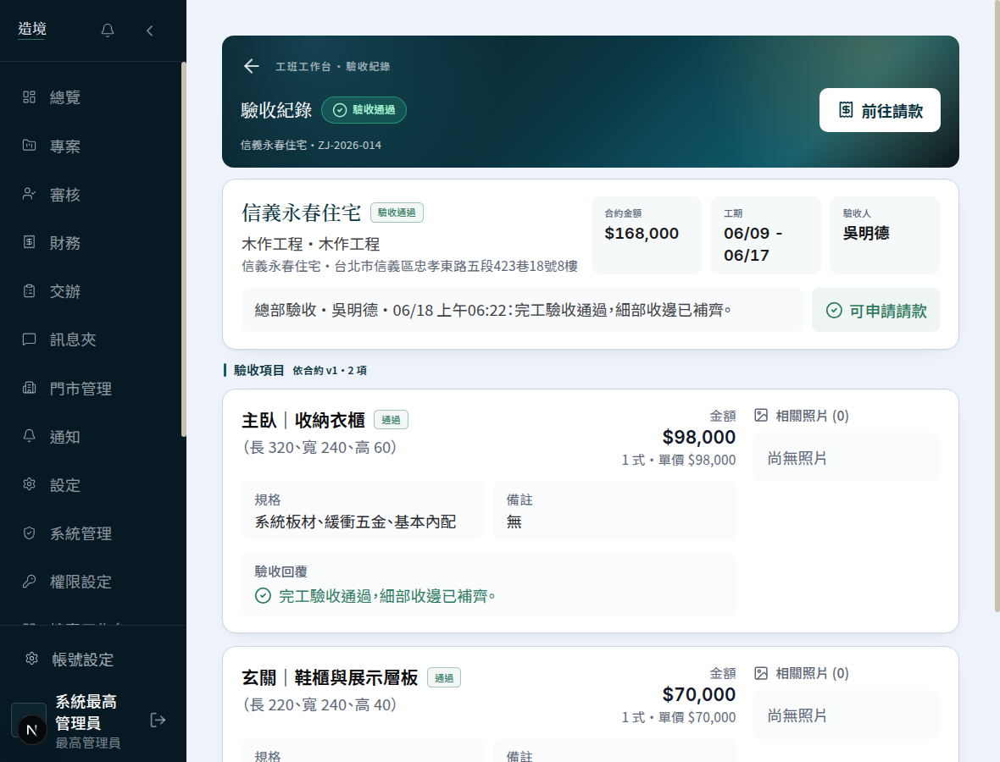
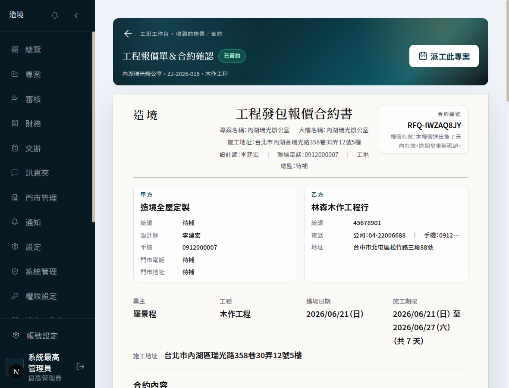

3
次提交 Commit
4
頁面改版
8
檔案調整
已上線
正式環境
本次更新做了三件事
1
整合最新業務邏輯
把工程協作流程的最新業務邏輯合併進來。原則是「業務邏輯採用最新版、介面採用新設計」，8 處衝突逐一確認，確保功能與資料正確無誤。
2
工班端 4 頁介面全面改版
公司設定、派工管理、驗收紀錄、工程報價合約 4 個頁面，套上墨綠品牌的全新介面：頂部品牌橫幅、關鍵數字摘要、清楚的資訊分區。只改外觀，不動任何功能與資料邏輯。
3
修復合約頁排版溢出
合約文件因寬度用「整個螢幕寬」計算、未扣掉左側選單，導致右側內容被裁切。改為「容器相對寬度」後，桌機與手機皆完整顯示，列印版維持不變。
4 頁改版前後對照（實機截圖）
公司設定工班老闆維護公司資料、收款帳戶、可接工種與常用報價
改版前
改版後

改了什麼：墨綠品牌橫幅 + 公司狀態與「成員數／可接工種／請款資料」一眼可見；資料改為清楚分區清單，去掉重複的卡中卡。
派工管理安排師傅每日進場、查看本週／本月專案行事曆
改版前
改版後
改了什麼：「尚未編排／已排／驗收提交／明日可派人員」四個數字變成頂部可點篩選頁籤，更醒目；行事曆功能維持原樣。
驗收紀錄查看每個工項的驗收結果、需改善項目並重新送驗
改版前

改版後

改了什麼：頂部清楚標示驗收狀態（通過／改善）；合約金額、工期、驗收人摘要化；每個工項的金額與回覆層次分明。
工程報價單 ＆ 合約確認工班收到設計師詢價、確認單價與簽約
改版前
改版後（含排版修復）

改了什麼：頂部加上墨綠品牌橫幅與「已簽約」狀態、派工捷徑；修復文件右側被裁切的排版問題；正式合約文件本體維持原樣，確保可列印與法律完整性。
技術重點
共用設計系統，不重造輪子
新增 11 個共用樣式類別（
zj-hero / zj-htabs / zj-pcard 等），與既有 PM 工作台同源，4 個工班頁與整個系統視覺零漂移。2970 行合約表單零碰
最複雜的報價合約表單是業務核心，改版只動外層介面、完全不碰其內部邏輯，將線上風險降到最低。
排版 bug 根因：用螢幕寬而非容器寬
固定側欄版面中用
100vw 算寬度會把側欄也算進去而溢出；改用容器相對的 100% + max-width 解決，是前端常見陷阱。每頁實機驗證，桌機 + 手機
改完每一頁都用真實帳號、真實資料、桌機與手機雙視窗實機檢視，型別檢查與正式建置全綠才上線。
部署與驗證
正式環境
業主預覽